Рисунок Николая Рожнова
Страницы авторов "Тёмного леса"
Литературный Кисловодск и окрестности
Пишите нам! temnyjles@narod.ru
|
| Дирижабль Франца Леппиха. Рисунок Николая Рожнова |
| 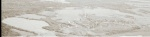 |
Едва ли не в любом тексте, рассказывающем об усадьбе Воронцово, давно вошедшей в черту Москвы (ныне ее территория ограничена улицами Архитектора Власова, Академика Челомея и Воронцовскими Прудами), сообщается, что она была полностью уничтожена французами в 1812 году в качестве мести за сооружение здесь воздушного шара - предполагаемого грозного оружия русских в борьбе с наполеоновской армией. Однако наличие в усадьбе построек, переживших Отечественную войну, вызывает по сему поводу большие сомнения. Попробуем разобраться.
Перед нашествием французов Воронцово принадлежало обер-гофмейстерине и статс-даме княгине Александре Николаевне Волконской (1754-1834) - дочери фельдмаршала князя Николая Васильевича Репнина (1734-1801) и супруге генерала от кавалерии князя Григория Семеновича Волконского (1742-1824).
По свидетельству дипломата Якова Ивановича Булгакова, сделавшись владелицей Воронцова, А.Н. Волконская начала сдавать усадьбу под дачи представителям московской элиты, не желающим далеко уезжать от города. Поэтому в теплое время года Воронцово превращалось в один из первых подмосковных "дачных поселков", где проживали Депрерадовичи, Корсаковы, Мятлевы, Спичинские и другие знатные и богатые семейства{1}.
| 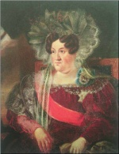 | Портрет Александры Николаевны Волконской. 1820-е годы |
В мае 1812 года усадьбу Воронцово у А.Н. Волконской арендовал бывший московский губернский предводитель дворянства (1808-1810) и гражданский губернатор (1810-1813) Н.В. Обресков. В отличие от дачных арендаторов предыдущих лет, он, не пожелав иметь соседей, снял усадьбу целиком, поскольку намеревался использовать усадебную территорию не для летнего отдыха, а для строительства большого летательного аппарата - дирижабля, приводимого в движение мускульной силой. С него предполагалось бомбардировать наполеоновскую армию зажигательными снарядами (интенсивная подготовка к войне с Францией шла с 1810 года{2}).
| 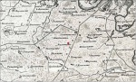 | Усадьба Воронцово на карте 1766 года |
Автор идеи - отставной офицер английской армии (майор или капитан) баварец Франц Ксавьер Леппих (1775-1819) - в конце 1811 года оказался в Париже, где предложил свое изобретение Наполеону. Однако император запретил любые эксперименты с воздухоплаванием и велел выслать Леппиха за пределы Франции.
Тогда Леппих связался с российским посланником при Штутгартском дворе Д.М. Алопеусом, который сообщил об идее постройки дирижабля Александру I. На сей раз предложение, сулившее военные победы, было принято. Леппиху выдали российский паспорт на фамилию Шмидт - для пущей секретности. Конспирация простиралась так далеко, что даже фельдъегерский прапорщик Адольф Иордан, доставивший Леппиха в Москву, получил фальшивый документ на имя курляндца Фехтера (Фейхнера). Более того, по просьбе Александра I Н.В. Обресков не информировал об изобретателе такую важную фигуру, как главнокомандующий в Москве (1809-1812) престарелый генерал-фельдмаршал граф И.В. Гудович, поскольку человек из окружения графа, итальянец Сальватори, подозревался в шпионаже в пользу Наполеона. Однако, судя по тому, что в донесении царю И.В. Гудович, отставленный 12 мая, отметил свое личное участие в выборе Воронцова как места изготовления дирижабля, тайну соблюсти не удалось{3}. Вопрос об источнике утечки информации остался открытым.
| 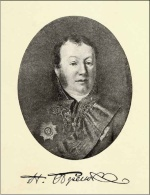 | Портрет Н.В. Обрескова. Неизвестный художник. Начало XIX века. Из книги "Московское дворянство в 1812 году". М., 1912 |
| 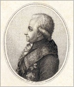 | Портрет Я.И. Булгакова. 1790-е годы. Гравер А. Осипов |
| 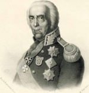 | Портрет графа Ивана Васильевича Гудовича. Б.Седов. 1857 год. Литография по оригиналу начала XIX века |
14 мая Ф.К. Леппих и А. Иордан приехали в Москву. Последний вручил Н.В. Об-рескову письмо Александра I, в котором содержалось поручение тайно поместить Леппиха недалеко от города и снабдить его всем необходимым{4}. Интересно, что новый главнокомандующий граф Ф.В. Ростопчин тоже указывал на свою роль в выборе Воронцова, не зная об аналогичном заявлении Гудовича. Во всяком случае, не позднее 27 мая Леппих уже прибыл в усадьбу{5}, что делает неправдоподобным заявление Федора Васильевича, принявшего должность 24 мая и попросту не имевшего времени этим заниматься.
Леппиховский проект поражал своими масштабами. Для начала работ было отпущено 8 тысяч рублей. 14 столяров, восемь слесарей, трое портных, 24 белошвейки, две прачки и несколько человек обслуживающего персонала принялись за дело.
| 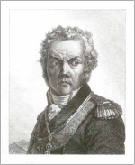 | Портрет Ф.В. Ростопчина. Г. Рейнхольд. 1812 год |
Постепенно численность сотрудников Ф.К. Леппиха возросла до 100 человек. 40 квалифицированных рабочих пришлось даже вывезти из Австрии. За порядком присматривали пятеро унтер-офицеров.
Ближайшим леппиховским помощником в России являлся друг детства изобретателя барон Георг Антон (Егор Антонович) фон Шеффер (1779-1836), ставший "директором физических и химических принадлежностей". Он служил лекарем при московской городской полиции, но, случайно встретив Леппиха в Москве, согласился занять эту должность.
| 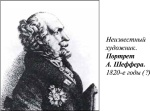 | Портрет Г.А.Шеффера. Неизвестный художник. 1820-е годы. |
Ф.В. Ростопчин между тем продолжил "играть в тайну". 11 июня 1812 года он поставил Александра I в известность о придуманном им способе сохранить конфиденциальность предприятия: Н.В. Обресков под чужим именем должен был заключить с Ф.К. Леппихом договор об изготовлении якобы "моделей земледельческих орудий"{6}.
| 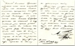 | Письмо императора Александра I от 24 мая 1812 года московскому губернатору Н.В. Обрескову с инструкцией по соблюдению особой секретности при строительстве "Летучего корабля" и уведомлением об отправке семи рабочих, выписанных по просьбе Леппиха |
Предполагалось, что на реализацию проекта понадобится четыре месяца. Однако переход наполеоновской армии через Неман 12 июня спутал все карты: результат стали требовать срочно. При этом озаботились еще большим усилением секретности. 4 июля Ф.В. Ростопчин в письме к Александру I сообщил, что Воронцово вскоре будет охранять отряд из пятидесяти солдат и двух офицеров{7}. Позже численность возросла - уже до 160 гренадер и 12 драгун верхом патрулировали окрестности усадьбы.
27 июля мастерскую Ф.К. Леппиха лично проинспектировал приехавший в Москву Александр I. В этот день{8} он встречался с представителями дворянства и купечества в Слободском дворце - мероприятие важнейшее, знаковое; и все же нашел время для поездки в Воронцово: настолько большое значение придавалось им леппиховскому начинанию. Визит носил неофициальный характер. Александр I прибыл без свиты. Его сопровождал только бывший прусский премьер-министр (1807-1808) барон Генрих Фридрих Карл фом унд цум Штейн (1757- 1831), перешедший на русскую службу{9}. Работы Леппиха впечатлили императора, и их финансирование продолжилось.
По свидетельству студента В.В. Шнейдера, побывавшего в Воронцове через несколько дней после Александра I, там на парадном дворе "висела раззолоченная гондола и какие то большие крылья"{10}, то есть император застал дирижабль уже существующим, хотя и не до конца завершенным.
В каждом письме Ф.В. Ростопчин информировал вернувшегося в Петербург царя о деятельности Ф.К. Леппиха: "Леппиху нужно 5 тысяч аршин тафты особого приготовления. Тафта будет готова через 15 дней. Количество материи и быстрота, с которой требуется исполнить этот заказ, могли бы возбудить любопытство Кирьякова{11}, но, к счастью, этому человеку пришло в голову, что Леппих готовится открыть торговлю пластырями, и я ему даже предложил сделаться компанионом Леппиха по этой торговле. <...> Тафта одна будет стоить 20 тысяч рублей. Леппиху, кроме того, нужно будет на 50 тысяч рублей серной кислоты и на подобную же сумму железных опилок"; "Большая машина будет окончена 15 августа. Через десять дней он произведет опыт в небольших размерах с крыльями"; "Леппих истратил уже 72 тыс. рублей"; "Леппих собирает теперь в одно целое части машины; тафта уже сшита"; "Он много тратит денег; ему выдано уже 130 000 руб., но если б удалось его предприятие, то можно бы не пожалеть и миллиона"{12}.
| 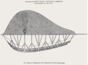 | Дирижабль Ф.К. Леппиха |
| 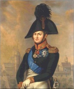 | Портрет Александра I. Неизвестный художник. Начало XIX века |
| 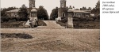 | Парадный въезд в усадьбу Воронцово. Начало XX века |
В канун Бородинской битвы проект решили рассекретить, дабы воодушевить москвичей. К тому же они, по свидетельству А.А. Аракчеева, и так уже все знали. В Воронцово из Москвы началось массовое паломничество. И хотя на территорию усадьбы никого не пускали, "народ, возвращаясь домой, рассказывал, что видел своими глазами, как готовился шар на верную гибель врага, и тем довольствовался"{13}. Сведения о дирижабле запрашивал у Ф.В. Ростопчина М.И. Кутузов{14}. 22 августа генерал-губернатор опубликовал в газете "Московские ведомости" следующее сообщение:
"От главнокомандующего в Москве.
Здесь мне было поручено от Государя сделать большой шар, на котором 50 человек полетят, куда захотят, и по ветру и против ветра, а что от чего будет, узнаете и порадуетесь. Если погода будет хороша, то завтра или послезавтра ко мне будет маленький шар для пробы. Я вам заявляю, чтобы вы, увидя его, не подумали, что это от злодея (Наполеона. - М.К.), а он сделан к его вреду и погибели"{15}.
Один из главных героев романа Л.Н. Толстого "Война и мир" Пьер Безухов "поехал в село Воронцово смотреть большой воздушный шар, который строился Леппихом, <...> и пробный шар, который должен был быть пущен завтра. Шар этот был еще не готов, но, как узнал Пьер, он строился по желанию государя. Государь писал графу Ростопчину об этом шаре следующее: "Только что Леппих будет готов, составьте экипаж для его лодки из верных и умных людей и пошлите курьера к генералу Кутузову, чтобы предупредить его. Я сообщил ему об этом. Внушите, пожалуйста, Леппиху, чтобы он обратил хорошенько внимание на то место, где он спустится в первый раз, чтобы не ошибиться и не попасть в руки врага. Необходимо, чтоб он соображал свои движения с движениями главнокомандующего""{16}.
Писатель, публицист, издатель журнала "Русский вестник" С.Н. Глинка как один из самых известных патриотов даже получил предложение (вероятнее всего, от Ф.В. Ростопчина - ни у кого другого полномочий на то не было) участвовать в боевых действиях вместе с Ф.К. Леппихом: "К заглушению мысли о предстоящей опасности занимали умы народа сооружением на Воробьевых горах какого-то огромного шара, который, по словам разгульной молвы, поднявшись над войсками Наполеона, польет огненный дождь, особенно на артиллерию. Шутя или не шутя, мне предлагали место на этом огненосном шаре. Я отвечал: "Как первый московский ратник я стану в срочный час в ряды ополчения; но признаюсь откровенно, что я не привык ни к чиновному возвышению, ни к летанию по воздуху. У меня на высоте закружится голова""{17}.
| 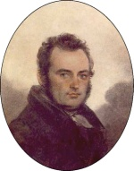 | Портрет С.Н.Глинки. В.П. Лангер. Около 1820 года |
| 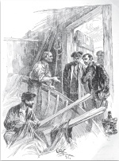 | Строительство дирижабля в Воронцове. А.П. Апсит. Рисунок 1906 года из книги Г.Т. Полилова-Северцева. "Наши деды - купцы. Бытовые картины начала XIX в.". СПб., 1907 |
| 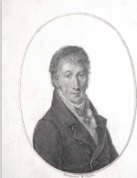 | Портрет Н.М.Карамзина. Н.И. Уткин. Гравюра с оригинала В.А.Тропинина. 1815 год |
Нашлись и скептики, одним из них являлся историк Н.М. Карамзин. В письме к жене от 23 августа 1812 года он отозвался о творении Ф.К. Леппиха очень осторожно: "Нынешний день увидим шар, над которым один немец долго трудился в Воронцове и которым надеется сделать большой вред неприятелю: я не легковерен"{18}.
А после Бородинского сражения (26 августа) скептиком стал и Ф.В. Ростопчин. Тональность его реляций императору по поводу предприятия немца резко изменилась: "С прискорбием извещаю Ваше величество о неудаче Леппиха. <...> Кажется, надо отказаться от надежды на успех. <...> Леппих - сумасшедший шарлатан"{19}.
За 24 часа до сдачи Москвы мастерскую по изготовлению дирижабля ликвидировали. Из Воронцова выехали два больших обоза. С одним из них Ф.К. Леппих и его сотрудники отправились в Петербург. Другой обоз из 130 подвод под командой работавшего с Леппихом отставного генерала А.А. Чесменского двинулся в Нижний Новгород{20}. То, что не удалось вывезти, по приказу Ф.В. Ростопчина частично уничтожила "специальная команда унтер-офицеров"{21}. Она сожгла здание, в котором сооружали "малый шар"{22}, и гондолу дирижабля ("большого шара") на Парадном дворе. Однако "многое было оставлено"{23} из-за спешки, поскольку французская армия находилась на расстоянии всего лишь дневного перехода от русской и вошла в Москву 2 сентября.
| 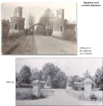 | 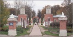 | 2017 год. Фотография автора |
Назначенному в тот же день комендантом города графу Антуану Дюронелю "о строении шара с указанием на тех, кто этим занимался, какого материала и веществ было употреблено и у кого они куплены"{24}, донес квартальный поручик московской полиции Павел Иванович Лакроа. Через Дюронеля информация стала известна Наполеону. Как вспоминал адъютант Наполеона Арман де Коленкур, "императору сообщили <...> о зажигательном воздушном шаре, над которым долго работал под покровом тайны некий англичанин или голландец по фамилии Шмидт. Этот шар, как уверяли, должен был погубить французскую армию, внеся в ее ряды беспорядок и разрушение. Тот же изобретатель изготовлял много гранат и горючих материалов. Большая часть горючих материалов, найденных во многих учреждениях и приготовленных для поджога, действительно была изготовлена по определенной системе"{25}.
Наполеон приказал провести дознание. Следы деятельности Ф.К. Леппиха и его помощников были легко найдены начальником жандармов и главным аудитором (судьей) бригадным генералом графом Жаном Лоэром. Судя по его докладной записке{26}, в Воронцове обнаружились сгоревшая гондола и модель дирижабля, столярные и слесарные мастерские с инструментами, много купороса в бутылях и бочках (купоросом тогда называли серную кислоту), а также чаны, в которых добывался водород для наполнения оболочки шара{27}. Взрывчатых веществ, предназначенных для начинения бомб или ракет, в Воронцове не оказалось, но французы отыскали их остатки в неком "белом домике" неподалеку от господского дома - возможно, во флигеле, где при П.И. Репнине находилась церковь. Командир авангарда Тверского ополчения князь А.А. Шаховской, встретившийся после оставления Москвы наполеоновской армией с вернувшимся в город Н.В. Обресковым, свидетельствовал: "Я от него узнал многие обстоятельства и происшествия, предварившие вход неприятеля; между прочим, о горючем шаре, который долго и тайно приготовляли в подмосковной князя Репнина. Несколько оставшихся от него начиненных горючим веществом бумажных трубок были выставлены уликою в зажигательстве Москвы [против] несчастных, схваченных и повешенных по военному Наполеонову суду, давно известному на Руси под именем Шемякина"{28}.
| 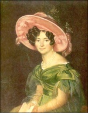 | Портрет З.А. Волконской. О.А. Кипренский. 1829 год |
Считается, что после расследования французы усадьбу, а также входившие в состав имения сельцо Шатилово и деревню Петровское спалили. Эту версию придумала и распространила сама владелица - А.Н. Волконская - с целью получить от правительства компенсацию за понесенный в ходе боев ущерб{29}. Используя свои придворные связи, она действовала через сестру императора - Великую княгиню Екатерину Павловну. Та 4 февраля 1813 года написала Александру I, что французы якобы дотла сожгли имение А.Н. Волконской, дабы уничтожить все оставшееся от мастерской Ф.К. Леппиха{30}. Однако император в ответном письме от 23 февраля отказался возмещать княгине ущерб - со следующей вполне справедливой мотивировкой: гондола дирижабля была уничтожена до прихода французских войск, а сгоревших деревень хватало повсюду{31}. Безусловно, усадьба подверглась разграблению. Пострадали церковь (утварь, ризница) и кордегардии, ставшие домами причта ("внутри обезображены"{32}), привезенные в Воронцово из Москвы вещи одного из сыновей владелицы имения - князя Николая Григорьевича Репнина, его жены Варвары Алексеевны и тестя, графа Алексея Кирилловича Разумовского, многое другое{33}. Но подобная участь постигла все усадьбы, оказавшиеся на театре военных действий. Господский же дом в Воронцове уцелел. В нем даже остался пресловутый купорос{34}, поскольку французам не было смысла уничтожать свидетельства, с их точки зрения доказывающие, что русское правительство использовало пожар древней столицы как нецивилизованный метод ведения войны. Более того, дом, пусть в руинированном виде, существовал еще в 1825 году. На тот момент в усадьбе проживала княгиня Зинаида Александровна Волконская, урожденная княжна Белосельская-Белозерская (1790-1862), известная в литературных кругах писательница, московский салон которой посещали все тогдашние знаменитости{35}. З.А. Волконская была замужем за средним сыном владелицы Воронцова - князем Никитой Григорьевичем Волконским (1791-1841), однако супруги жили раздельно, поэтому Зинаида Александровна приезжала в имение одна. Из дневника итальянского художника Л. Манзони, входившего в окружение З.А. Волконской: "Это замечательное место, под названием Воронцово, в восьми верстах от города, <...> из жилых помещений там оставалось только два крыла дома, или павильоны. Дом посередине так и стоял в развалинах с двенадцатого года. <...> В сей равнинной местности провели мы самое приятное время"{36}. "Павильоны", они же флигели, построенные еще при Н.В. Репнине, сохранились в Воронцове до наших дней.
Несмотря на смену владельцев имения, господский дом не был восстановлен. В середине XIX века разобрали и руины.
Во флигелях первоначально поселились лишившиеся крова крестьяне из сельца Шатилово и деревни Петровское{37} (французы сожгли в обоих населенных пунктах десять дворов, уцелело три{38}). Причем, по свидетельству поверенного Н.Г. Репнина Ильи Илларионовича Бурцева, Шатилово и Петровское были сожжены только после выхода наполеоновской армии из Москвы{39}, так что их гибель действительно не имеет отношения к истории с воздушным шаром. Тем не менее вышеуказанная версия А.Н. Волконской оказалась весьма устойчивой и до сих пор фигурирует в краеведческих и даже научных изданиях, несмотря на наличие в Воронцове усадебных построек, переживших 1812-й год.
Пользуясь случаем, отметим, что сходство названия "Воронцово" с названием усадьбы Ф.В. Ростопчина "Вороново", располагавшейся южнее по Калужской дороге, часто приводит к недоразумениям: ряд авторов путают происходившие в обеих усадьбах события местами или соединяют эти события в некий конгломерат.
{1} Из писем Я.И. Булгакова к старшему его сыну Александру Яковлевичу / Русский архив. 1898. Кн. 1. С. 537.
{2} Переписка императора Александра I с сестрой, Великой княгиней Екатериной Павловной. СПб., 1910. С. 129.
{3} Белов А.В. Тайное "чудо-оружие" Александра I. Сверхсекретное военное производство и пожар Москвы 1812 года / Вестник МГУУ. 2013. N2. С. 35.
{4} Письмо императора Александра Павловича к московскому губернатору [Н.В.] Об-резкову / Русский архив. 1898. Кн. 1. С. 86. В публикации - "Обрезкову", правильно - "Обрескову".
{5} РГВИА. Ф. 846. Оп. 16. Д. 3592. Л.1.
{6} Ф.В. Ростопчин писал: "Так как совершенно немыслимо держать в тайне в продолжение четырех месяцев существование заведения, в котором 60 рабочих будут заниматься своим делом в 7 верстах от города, то мы условились с г. Обресковым, что он заключит под чужим именем с г. Леппихом условие, в силу которого последний обязуется изготовить для него множество моделей различных земледельческих орудий, которые должны быть готовы к новому году. Это удовлетворит любопытство в том случае, если бы оно было возбуждено каким-нибудь непредвиденным обстоятельством" (Переписка императора Александра Павловича с графом Ф.В. Ростопчиным. 1812-1814 гг. / Русская старина. 1893. N1. С. 179).
{7} Соболев Д. А., Хазанов Д. Б. Немецкий след в истории отечественной авиации. М., 2000. С. 7.
{8} В литературе зачастую фигурирует 15 июля, т. е. дата без комментариев приводится по новому стилю.
{9} Заслуженный профессор Санкт-Петербургского университета по кафедре римского права В.В. Шнейдер - тогда еще студент, живший у владельца суконного магазина купца Данкварта - сообщил последнему, что видел императора, выехавшего из Москвы через Калужскую заставу в направлении Воронцова. В свою очередь Данкварт сказал: "А я едва-едва не столкнулся с ним". "Он, - вспоминает далее В.В. Шнейдер, - находился на даче [Н.В.] Репнина в то время, когда туда приехал император вместе с б[ароном] Штейном. Затем начался разговор, который возбудил мое любопытство, так что я попросил Данкварта, чтобы он взял меня с собою, когда поедет на Репнинскую дачу. "Это невозможно, - отвечал он на мою просьбу, - туда пускают по билетам, а у меня только один билет для меня лично". - "Но возьмите меня с собой как вашего мастерового". - "Да, это можно", - отвечал он мне. Действительно, через несколько дней я отправился с ним на Репнинскую дачу". Шнейдер отметил, что попасть в Воронцово было нелегко: "Дача охранялась стражею, и мы проехали несколько караулов" (Попов А.Н. Москва в 1812 году / Русский архив. 1875. Кн. 3. С. 43).
{10} Там же. С. 44.
{11} Кирьяков Григорий Аврамович (1741- 1812) - коммерции советник, владелец шелковой и ситцевой фабрик, московский городской голова (1807-1810).
{12} Цит. по: Родных А. Тайная подготовка к уничтожению армии Наполеона в двенадцатом году при помощи воздухоплавания. СПБ., 1912. С. 24-27.
{13} Языков А.П. Из воспоминаний о селе Грузине, имении графа Аракчеева, в 1826 году / Русский архив. 1869. Вып. 9. Стлб. 1467.
{14} М.И. Кутузов 22 августа писал Ф.В. Ростопчину: "Государь император говорил мне об аэростате, который тайно готовится близ Москвы. Можно ли им будет пользоваться, прошу мне сказать, и как употребить его удобнее" (М.И.Кутузов. Сборник документов. Т. IV. Ч. 1. М., 1954. С. 125-126).
{15} См.: Богданович М. История Отечественной войны 1812 года, по достоверным источникам составленная по Высочайшему повелению. Т. II. СПб., 1859. С. 264-265.
{16} В Ярославле в юношеской библиотеке им. Н.А. Некрасова (филиал N10 МУК ЦБС) хранится 85-й том журнала "Современник" за 1861 г., где есть надпись: "Граф Толстой дача "Воронцово" личная библиотека", возможно, сделанная Л.Н. Толстым в усадьбе Воронцово (см.: Климова Л. Первая народная библиотека города Ярославля и ее попечители из усадьбы Н.А. Некрасова "Карабиха" / Михайловская пушкиниана. Вып. 63. "Когда б я был царь." Материалы Михайловских Пушкинских чтений ""Когда б я был царь." Художник и власть" (21-25 августа 2013 года) и научно-практических чтений "Библиотека в усадьбе" "...На их полях она встречает Черты его карандаша..." (23-27 апреля 2014 года). Михайловское, 2014. С. 339).
{17} Глинка С.Н. Из "Записок о 1812 годе" / 1812 год в русской поэзии и воспоминаниях современников. М., 1987. С. 408-409.
{18} См.: Карнишина Л.М. Н.М. Карамзин. Письма 1812 года к жене / Отечественная война 1812 года. Источники. Памятники. Проблемы. Материалы XII всероссийской научной конференции (Бородино, 6-8 сентября 2004 г.). М., 2005. С. 337.
{19} Цит. по: Родных А. Указ. соч. С. 33.
{20} Родных А. Указ. соч. С. 37. Чесменский Александр Алексеевич (1761 или 1762- 1820) - внебрачный сын графа А.Г. Орлова-Чесменского, генерал-майор, владелец подмосковной усадьбы Чесменка (Садки), находившейся в районе современной станции метро "Текстильщики".
{21} Ф.В. Ростопчин сильно преувеличивал, когда в конце октября 1812 г. оправдывался перед Александром I, доказывая сохранение секретности при ликвидации мастерской Ф.К. Леппиха специальной командой унтер-офицеров.
{22} Переписка императора Александра I с сестрой, Великой княгиней Екатериной Павловной. С. 134.
{23} Бумаги, относящиеся до Отечественной войны 1812 года, собранные и изданные П.И. Щукиным. Ч. 1. М., 1897. С. 139-140.
{24} Там же. Ч. 2. М., 1897. С. 17.
{25} Коленкур А. де. Поход Наполеона в Россию. Мемуары. Смоленск, 1991. С. 140. Другой адъютант, бригадный генерал Филипп-Поль де Сегюр (1780-1873), писал: "В то же время далеко от Москвы по приказанию Александра и под руководством одного германского фейерверкера сооружали чудовищный воздушный шар. Этот громадный аэростат, снабженный крыльями, должен был парить над французской армией и, выбрав какого-нибудь командира, выбросить на него дождь из огня и железа. Сделано было несколько проб, и они потерпели неудачу, так как постоянно ломались пружины, приводящие в движение крылья" (Сегюр Ф. П. де. Поход в Россию. Записки адъютанта императора Наполеона I. Смоленск, 2003. С 148).
{26} Бумаги, относящиеся до Отечественной войны 1812 года. Ч. 1. С.139-140.
{27} Наполеон в России глазами русских. М., 2004. С. 94.
{28} Двенадцатый год. Воспоминания князя А.А. Шаховского / Русский архив. 1886. N11. С. 394. По результатам следствия 10 человек, уличенных показаниями свидетелей и признавших свое участие в поджогах, были приговорены к расстрелу и казнены у стены Новодевичьего монастыря: Петр Игнатьев, поручик 1-го полка Московского ополчения; Стратон Баров, живописец (маляр); Алексей Карлум, солдат московской полиции; Иван Томас, сиделец (продавец, приказчик); Петр Стигневич, живописец; Илья Агакомов, кузнец; Иван Максимов, лакей; Семен Ахрамеев (род занятий не указан); Николай Левутьев, живописец; Федор Сергеев, портной. 16 человек, "недостаточно изобличенных", приговорили к тюремному заключению. Вот их имена: Иван Касианов, пономарь; Николай Вак-селев, кузнец; Федор Мидцов, солдат; Василий Ермолаев, ремесленник; Семен Иванов, обойщик; Андрей Шестоперов, Федор Ефимов, Луциан Мойтейц, Сивал Сеахов, Гаврила Абрамов, Самойло Никифоров, Гаврила Беглов, Федор Григорьев - солдаты московской полиции; Степан Логинов и Николай Бельшеров - лакеи; Андрей Шестопьяров (род занятий не указан).
{29} Компенсация полагалась помещикам, если у них пострадали все имения так, что крестьянам нечем было кормиться. Подробнее см.: ЦГА Москвы. ОХД до 1917 г. Ф. 20. Оп. 2. Д. 2243. Л. 92-96 об.; Бумаги, относящиеся до Отечественной войны 1812 года. Ч. 2. С. 153-156; Ч. 6. М., 1901. С. 74-76, 81-88.
{30} Екатерина Павловна сообщила Александру I следующее: "У княгини Волконской есть имение под Москвой, которое называется Ворон[ц]ово, наследство князя Репнина, которое губернатор Обресков прошлой весной арендовал как будто для проживания, вместо этого, не говоря ни слова, он устроил там производство огромного шара, то есть склад с порохом и другими горючими материалами, что противоречило контракту простой аренды, условиям землевладения и т. д. Французы, оккупировав Москву, сразу же начали поиски лаборатории, где создавалась эта адская машина, и для того, чтобы полностью уничтожить оставшиеся материалы, дотла сожгли деревню: Вы знаете, что в других деревнях они ограничивались лишь грабежом" (Переписка императора Александра I с сестрой, Великой княгиней Екатериной Павловной. С. 129. Пер. с франц.).
{31} Александр I в ответном письме Екатерине Павловне от 23 февраля высказался так: "Что касается имения княгини Волконской, могу Вам ответить, что если оно и было сожжено, то не из-за шара, ибо там его уже не было. Французы уничтожили таким способом множество деревень, например, Марфино графа Салтыкова, Вяземы Дмитрия Голицына и множество других. Что касается Ворон[ц]ово, то сарай, в котором строился этот шар, как это всегда бывает, был уничтожен до прибытия врага" (Там же. С. 133-134. Пер. с франц.).
{32} Вайнтрауб Л.Р. Храм Святой и Живоначальной Троицы в Воронцово. 1807- 1997. М., 1999. С. 22.
{33} ВайнтраубЛ.Р. Указ. соч. С. 22-23; Коробко М.Ю. Москва усадебная. Путеводитель. М., 2005. С. 73.
{34} Наполеон в России глазами русских. С. 94.
{35} Подробнее см: Сайкина Н.В. Московский литературный салон княгини Зинаиды Волконской. М., 2005.
{36} РГАЛИ. Ф.172. Оп. 1. Ед. хр. 485. Л. 68. См. также: Вуич Л.И. Записки художника Л. Манзони. Поездка из Москвы в Таганрог (декабрь 1825 - январь 1826 г.) / Памятники культуры. Новые открытия. Письменность. Искусство. Археология. М., 1996. С. 30-44.
{37} Список сожженных неприятелем сел и деревень. Московский уезд / Московское дворянство в 1812 году. М., 1912. С. 446.
{38} ВайнтраубЛ.Р. Указ. соч. С. 22.
{39} Как сообщал И.Л. Бурцев: "В прошлом 1812 году в нашествие неприятельских войск при даче господина моего, отстоящей от Москвы по Калужской дороге в 6 верстах, селе Воронцове, новопостроенная церковь и в ней все церковные вещи и ризница разграблены все без остатку, а по выходе из Москвы по той Калужской дороге французских войск при оном селе домы и все при них домовое заведение сожжены до основания" (ЦГА Москвы. ОХД до 1917 г. Ф. 203. Оп. 752. Ед. хр. 993. Л. 62-62 об.).
Последнее изменение страницы 10 Jan 2019
{kind=link}
{kind=link}
{kind=link}
{kind=link}
{kind=link}
{kind=link}
{kind=link}
{kind=link}
{kind=link}
{kind=link}
{kind=link}
{kind=link}
{kind=link}
{kind=link}
{kind=link}
{kind=link}
{kind=link}
{kind=link}